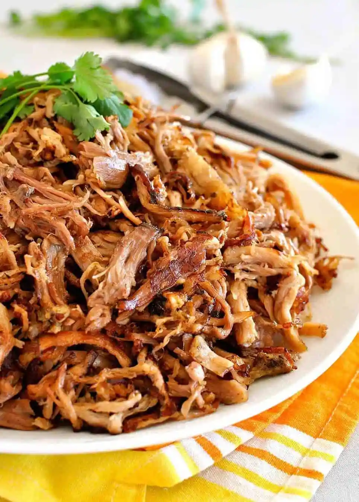

Carnitas

Description
Carnitas are Mexico’s version of pulled pork. It’s the first thing you seek upon landing in Mexico. It’s why we trawled the back streets of Mexico City in torrential rains,
hunting down a hole-in-the-wall carnitas joint that was popular with locals. Made by slow cooking pork fully submerged in lard, this confit method of cooking yields pork that’s unbelievably rich and tender with loads of crispy golden bits.
Ingredients
- Two kg Pork Shoulder (Boston Butt)
- Two 1/2 Teaspoons Salt
- One Teaspoon Black Pepper
- One Onion (Diced)
- One Jalapeno (Deseeded, Diced)
- Four Garlic Cloves (Minced)
- 3/4 Cup Orange Juice (Two Oranges)
Rub
- One Tablespoon Dried Oregano
- Two Teaspoons Ground Cumin
- One Tablespoon Olive Oil
Steps
- Rinse and dry the pork shoulder, rub all over with salt and pepper.
Cook until the meat begins to brown, about 5 minutes. Sprinkle with garlic powder, salt, and pepper.
- Combine the Rub ingredients then rub all over the pork.
- Place the pork in a slow cooker (fat cap up), top with the onion, jalapeño, minced garlic (don’t worry about spreading it) and squeeze over the juice of the oranges.
- Slow Cook on low for 10 hours or on high for 7 hours.
- Pork should be tender enough to shred. Remove from slow cooker and let cool slightly. Then shred using two forks.
- Optional: Skim off the fat from the juices remaining in the slow cooker and discard.
- If you have a lot more than 2 cups of juice, then reduce it down to about 2 cups. The liquid will be salty, it is the seasoning for the pork. Set liquid aside – don’t bother straining onion etc, it’s super soft.
Home